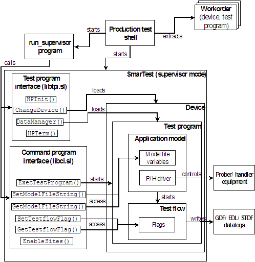

Custom shell in supervisor mode
When you want a better control over the test process from the test shell, you can start SmarTest in supervisor mode (using the -S option), and then make use the SmarTest TPI and CPI libraries. This is the recommended way if you want to implement a custom production test shell.
The supervisor mode was not originally designed to be used by an operator, but you can programmatically hide specific windows to make this mode suitable for operator control in a production environment. Details will be explained inImplementation details for supervisor mode.
A considerable advantage of running SmarTest in supervisor mode is that you can test multiple lots of the same device without having to reload setups (timings/levels/vectors) after each lot. This is because in supervisor mode, SmarTest will remain active after a lot has been tested, and therefore maintain its current setup.
The figure below shows the operational principles of a production shell in supervisor mode.

Note that in contrast to the operator mode example, the test shell does not control the test process directly, but starts another program (run_supervisor) that will do the actual work of calling the SmarTest API functions. For the reason of this, see Implementation details for supervisor mode.
The SmarTest API functions are from two separate libraries, CPI and TPI, which are collectively known as the SmarTest API. By calling functions in these two libraries, the user can programmatically access tester resources and control test execution. Many of the major CPI/TPI functions will be reviewed in Overview of the SmarTest API.